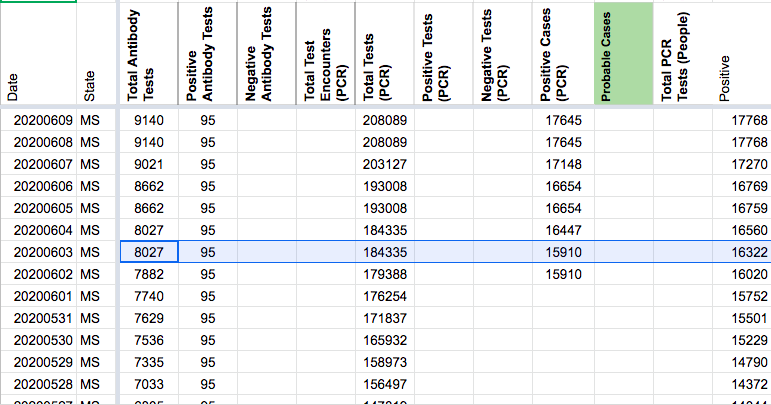

#1095: [MS] Clear Positive Antibody Tests timeseries
Issue number 1095
hmhoffman opened this issue on February 10, 2021, 9:22 PM PST
State: MS
Dates affected: 05/21/20 - 02/10/21
Describe the issue: From May 21, 2020 through May 26, 2020, we briefly captured Mississippi's Positive antibody tests (specimens) through state press conferences. After May 26, 2020, Mississippi no longer reported new data for this metric and we carried it over. On February 11, 2021, we cleared Mississippi's Positive antibody tests (specimens) timeseries to ensure that our data is as accurate and consistent as possible.
Comments
#1095: [MS] Clear Positive Antibody Tests timeseries
Issue number 1095
hmhoffman opened this issue on February 10, 2021, 9:22 PM PST
State: MS
Dates affected: 05/21/20 - 02/10/21
Describe the issue: From May 21, 2020 through May 26, 2020, we briefly captured Mississippi's Positive antibody tests (specimens) through state press conferences. After May 26, 2020, Mississippi no longer reported new data for this metric and we carried it over. On February 11, 2021, we cleared Mississippi's Positive antibody tests (specimens) timeseries to ensure that our data is as accurate and consistent as possible.
Comments
Rows edited: 265 MS 2021-02-09 positiveTestsAntibody: None (was 95) MS 2021-02-08 positiveTestsAntibody: None (was 95) MS 2021-02-07 positiveTestsAntibody: None (was 95) MS 2021-02-06 positiveTestsAntibody: None (was 95) MS 2021-02-05 positiveTestsAntibody: None (was 95) MS 2021-02-04 positiveTestsAntibody: None (was 95) MS 2021-02-03 positiveTestsAntibody: None (was 95) MS 2021-02-02 positiveTestsAntibody: None (was 95) MS 2021-02-01 positiveTestsAntibody: None (was 95) MS 2021-01-31 positiveTestsAntibody: None (was 95) MS 2021-01-30 positiveTestsAntibody: None (was 95) MS 2021-01-29 positiveTestsAntibody: None (was 95) MS 2021-01-28 positiveTestsAntibody: None (was 95) MS 2021-01-27 positiveTestsAntibody: None (was 95) MS 2021-01-26 positiveTestsAntibody: None (was 95) MS 2021-01-25 positiveTestsAntibody: None (was 95) MS 2021-01-24 positiveTestsAntibody: None (was 95) MS 2021-01-23 positiveTestsAntibody: None (was 95) MS 2021-01-22 positiveTestsAntibody: None (was 95) MS 2021-01-21 positiveTestsAntibody: None (was 95) MS 2021-01-20 positiveTestsAntibody: None (was 95) MS 2021-01-19 positiveTestsAntibody: None (was 95) MS 2021-01-18 positiveTestsAntibody: None (was 95) MS 2021-01-17 positiveTestsAntibody: None (was 95) MS 2021-01-16 positiveTestsAntibody: None (was 95) MS 2021-01-15 positiveTestsAntibody: None (was 95) MS 2021-01-14 positiveTestsAntibody: None (was 95) MS 2021-01-13 positiveTestsAntibody: None (was 95) MS 2021-01-12 positiveTestsAntibody: None (was 95) MS 2021-01-11 positiveTestsAntibody: None (was 95) MS 2021-01-10 positiveTestsAntibody: None (was 95) MS 2021-01-09 positiveTestsAntibody: None (was 95) MS 2021-01-08 positiveTestsAntibody: None (was 95) MS 2021-01-07 positiveTestsAntibody: None (was 95) MS 2021-01-06 positiveTestsAntibody: None (was 95) MS 2021-01-05 positiveTestsAntibody: None (was 95) MS 2021-01-04 positiveTestsAntibody: None (was 95) MS 2021-01-03 positiveTestsAntibody: None (was 95) MS 2021-01-02 positiveTestsAntibody: None (was 95) MS 2021-01-01 positiveTestsAntibody: None (was 95) MS 2020-12-31 positiveTestsAntibody: None (was 95) MS 2020-12-30 positiveTestsAntibody: None (was 95) MS 2020-12-29 positiveTestsAntibody: None (was 95) MS 2020-12-28 positiveTestsAntibody: None (was 95) MS 2020-12-27 positiveTestsAntibody: None (was 95) MS 2020-12-26 positiveTestsAntibody: None (was 95) MS 2020-12-25 positiveTestsAntibody: None (was 95) MS 2020-12-24 positiveTestsAntibody: None (was 95) MS 2020-12-23 positiveTestsAntibody: None (was 95) MS 2020-12-22 positiveTestsAntibody: None (was 95) MS 2020-12-21 positiveTestsAntibody: None (was 95) MS 2020-12-20 positiveTestsAntibody: None (was 95) MS 2020-12-19 positiveTestsAntibody: None (was 95) MS 2020-12-18 positiveTestsAntibody: None (was 95) MS 2020-12-17 positiveTestsAntibody: None (was 95) MS 2020-12-16 positiveTestsAntibody: None (was 95) MS 2020-12-15 positiveTestsAntibody: None (was 95) MS 2020-12-14 positiveTestsAntibody: None (was 95) MS 2020-12-13 positiveTestsAntibody: None (was 95) MS 2020-12-12 positiveTestsAntibody: None (was 95) MS 2020-12-11 positiveTestsAntibody: None (was 95) MS 2020-12-10 positiveTestsAntibody: None (was 95) MS 2020-12-09 positiveTestsAntibody: None (was 95) MS 2020-12-08 positiveTestsAntibody: None (was 95) MS 2020-12-07 positiveTestsAntibody: None (was 95) MS 2020-12-06 positiveTestsAntibody: None (was 95) MS 2020-12-05 positiveTestsAntibody: None (was 95) MS 2020-12-04 positiveTestsAntibody: None (was 95) MS 2020-12-03 positiveTestsAntibody: None (was 95) MS 2020-12-02 positiveTestsAntibody: None (was 95) MS 2020-12-01 positiveTestsAntibody: None (was 95) MS 2020-11-30 positiveTestsAntibody: None (was 95) MS 2020-11-29 positiveTestsAntibody: None (was 95) MS 2020-11-28 positiveTestsAntibody: None (was 95) MS 2020-11-27 positiveTestsAntibody: None (was 95) MS 2020-11-26 positiveTestsAntibody: None (was 95) MS 2020-11-25 positiveTestsAntibody: None (was 95) MS 2020-11-24 positiveTestsAntibody: None (was 95) MS 2020-11-23 positiveTestsAntibody: None (was 95) MS 2020-11-22 positiveTestsAntibody: None (was 95) MS 2020-11-21 positiveTestsAntibody: None (was 95) MS 2020-11-20 positiveTestsAntibody: None (was 95) MS 2020-11-19 positiveTestsAntibody: None (was 95) MS 2020-11-18 positiveTestsAntibody: None (was 95) MS 2020-11-17 positiveTestsAntibody: None (was 95) MS 2020-11-16 positiveTestsAntibody: None (was 95) MS 2020-11-15 positiveTestsAntibody: None (was 95) MS 2020-11-14 positiveTestsAntibody: None (was 95) MS 2020-11-13 positiveTestsAntibody: None (was 95) MS 2020-11-12 positiveTestsAntibody: None (was 95) MS 2020-11-11 positiveTestsAntibody: None (was 95) MS 2020-11-10 positiveTestsAntibody: None (was 95) MS 2020-11-09 positiveTestsAntibody: None (was 95) MS 2020-11-08 positiveTestsAntibody: None (was 95) MS 2020-11-07 positiveTestsAntibody: None (was 95) MS 2020-11-06 positiveTestsAntibody: None (was 95) MS 2020-11-05 positiveTestsAntibody: None (was 95) MS 2020-11-04 positiveTestsAntibody: None (was 95) MS 2020-11-03 positiveTestsAntibody: None (was 95) MS 2020-11-02 positiveTestsAntibody: None (was 95) MS 2020-11-01 positiveTestsAntibody: None (was 95) MS 2020-10-31 positiveTestsAntibody: None (was 95) MS 2020-10-30 positiveTestsAntibody: None (was 95) MS 2020-10-29 positiveTestsAntibody: None (was 95) MS 2020-10-28 positiveTestsAntibody: None (was 95) MS 2020-10-27 positiveTestsAntibody: None (was 95) MS 2020-10-26 positiveTestsAntibody: None (was 95) MS 2020-10-25 positiveTestsAntibody: None (was 95) MS 2020-10-24 positiveTestsAntibody: None (was 95) MS 2020-10-23 positiveTestsAntibody: None (was 95) MS 2020-10-22 positiveTestsAntibody: None (was 95) MS 2020-10-21 positiveTestsAntibody: None (was 95) MS 2020-10-20 positiveTestsAntibody: None (was 95) MS 2020-10-19 positiveTestsAntibody: None (was 95) MS 2020-10-18 positiveTestsAntibody: None (was 95) MS 2020-10-17 positiveTestsAntibody: None (was 95) MS 2020-10-16 positiveTestsAntibody: None (was 95) MS 2020-10-15 positiveTestsAntibody: None (was 95) MS 2020-10-14 positiveTestsAntibody: None (was 95) MS 2020-10-13 positiveTestsAntibody: None (was 95) MS 2020-10-12 positiveTestsAntibody: None (was 95) MS 2020-10-11 positiveTestsAntibody: None (was 95) MS 2020-10-10 positiveTestsAntibody: None (was 95) MS 2020-10-09 positiveTestsAntibody: None (was 95) MS 2020-10-08 positiveTestsAntibody: None (was 95) MS 2020-10-07 positiveTestsAntibody: None (was 95) MS 2020-10-06 positiveTestsAntibody: None (was 95) MS 2020-10-05 positiveTestsAntibody: None (was 95) MS 2020-10-04 positiveTestsAntibody: None (was 95) MS 2020-10-03 positiveTestsAntibody: None (was 95) MS 2020-10-02 positiveTestsAntibody: None (was 95) MS 2020-10-01 positiveTestsAntibody: None (was 95) MS 2020-09-30 positiveTestsAntibody: None (was 95) MS 2020-09-29 positiveTestsAntibody: None (was 95) MS 2020-09-28 positiveTestsAntibody: None (was 95) MS 2020-09-27 positiveTestsAntibody: None (was 95) MS 2020-09-26 positiveTestsAntibody: None (was 95) MS 2020-09-25 positiveTestsAntibody: None (was 95) MS 2020-09-24 positiveTestsAntibody: None (was 95) MS 2020-09-23 positiveTestsAntibody: None (was 95) MS 2020-09-22 positiveTestsAntibody: None (was 95) MS 2020-09-21 positiveTestsAntibody: None (was 95) MS 2020-09-20 positiveTestsAntibody: None (was 95) MS 2020-09-19 positiveTestsAntibody: None (was 95) MS 2020-09-18 positiveTestsAntibody: None (was 95) MS 2020-09-17 positiveTestsAntibody: None (was 95) MS 2020-09-16 positiveTestsAntibody: None (was 95) MS 2020-09-15 positiveTestsAntibody: None (was 95) MS 2020-09-14 positiveTestsAntibody: None (was 95) MS 2020-09-13 positiveTestsAntibody: None (was 95) MS 2020-09-12 positiveTestsAntibody: None (was 95) MS 2020-09-11 positiveTestsAntibody: None (was 95) MS 2020-09-10 positiveTestsAntibody: None (was 95) MS 2020-09-09 positiveTestsAntibody: None (was 95) MS 2020-09-08 positiveTestsAntibody: None (was 95) MS 2020-09-07 positiveTestsAntibody: None (was 95) MS 2020-09-06 positiveTestsAntibody: None (was 95) MS 2020-09-05 positiveTestsAntibody: None (was 95) MS 2020-09-04 positiveTestsAntibody: None (was 95) MS 2020-09-03 positiveTestsAntibody: None (was 95) MS 2020-09-02 positiveTestsAntibody: None (was 95) MS 2020-09-01 positiveTestsAntibody: None (was 95) MS 2020-08-31 positiveTestsAntibody: None (was 95) MS 2020-08-30 positiveTestsAntibody: None (was 95) MS 2020-08-29 positiveTestsAntibody: None (was 95) MS 2020-08-28 positiveTestsAntibody: None (was 95) MS 2020-08-27 positiveTestsAntibody: None (was 95) MS 2020-08-26 positiveTestsAntibody: None (was 95) MS 2020-08-25 positiveTestsAntibody: None (was 95) MS 2020-08-24 positiveTestsAntibody: None (was 95) MS 2020-08-23 positiveTestsAntibody: None (was 95) MS 2020-08-22 positiveTestsAntibody: None (was 95) MS 2020-08-21 positiveTestsAntibody: None (was 95) MS 2020-08-20 positiveTestsAntibody: None (was 95) MS 2020-08-19 positiveTestsAntibody: None (was 95) MS 2020-08-18 positiveTestsAntibody: None (was 95) MS 2020-08-17 positiveTestsAntibody: None (was 95) MS 2020-08-16 positiveTestsAntibody: None (was 95) MS 2020-08-15 positiveTestsAntibody: None (was 95) MS 2020-08-14 positiveTestsAntibody: None (was 95) MS 2020-08-13 positiveTestsAntibody: None (was 95) MS 2020-08-12 positiveTestsAntibody: None (was 95) MS 2020-08-11 positiveTestsAntibody: None (was 95) MS 2020-08-10 positiveTestsAntibody: None (was 95) MS 2020-08-09 positiveTestsAntibody: None (was 95) MS 2020-08-08 positiveTestsAntibody: None (was 95) MS 2020-08-07 positiveTestsAntibody: None (was 95) MS 2020-08-06 positiveTestsAntibody: None (was 95) MS 2020-08-05 positiveTestsAntibody: None (was 95) MS 2020-08-04 positiveTestsAntibody: None (was 95) MS 2020-08-03 positiveTestsAntibody: None (was 95) MS 2020-08-02 positiveTestsAntibody: None (was 95) MS 2020-08-01 positiveTestsAntibody: None (was 95) MS 2020-07-31 positiveTestsAntibody: None (was 95) MS 2020-07-30 positiveTestsAntibody: None (was 95) MS 2020-07-29 positiveTestsAntibody: None (was 95) MS 2020-07-28 positiveTestsAntibody: None (was 95) MS 2020-07-27 positiveTestsAntibody: None (was 95) MS 2020-07-26 positiveTestsAntibody: None (was 95) MS 2020-07-25 positiveTestsAntibody: None (was 95) MS 2020-07-24 positiveTestsAntibody: None (was 95) MS 2020-07-23 positiveTestsAntibody: None (was 95) MS 2020-07-22 positiveTestsAntibody: None (was 95) MS 2020-07-21 positiveTestsAntibody: None (was 95) MS 2020-07-20 positiveTestsAntibody: None (was 95) MS 2020-07-19 positiveTestsAntibody: None (was 95) MS 2020-07-18 positiveTestsAntibody: None (was 95) MS 2020-07-17 positiveTestsAntibody: None (was 95) MS 2020-07-16 positiveTestsAntibody: None (was 95) MS 2020-07-15 positiveTestsAntibody: None (was 95) MS 2020-07-14 positiveTestsAntibody: None (was 95) MS 2020-07-13 positiveTestsAntibody: None (was 95) MS 2020-07-12 positiveTestsAntibody: None (was 95) MS 2020-07-11 positiveTestsAntibody: None (was 95) MS 2020-07-10 positiveTestsAntibody: None (was 95) MS 2020-07-09 positiveTestsAntibody: None (was 95) MS 2020-07-08 positiveTestsAntibody: None (was 95) MS 2020-07-07 positiveTestsAntibody: None (was 95) MS 2020-07-06 positiveTestsAntibody: None (was 95) MS 2020-07-05 positiveTestsAntibody: None (was 95) MS 2020-07-04 positiveTestsAntibody: None (was 95) MS 2020-07-03 positiveTestsAntibody: None (was 95) MS 2020-07-02 positiveTestsAntibody: None (was 95) MS 2020-07-01 positiveTestsAntibody: None (was 95) MS 2020-06-30 positiveTestsAntibody: None (was 95) MS 2020-06-29 positiveTestsAntibody: None (was 95) MS 2020-06-28 positiveTestsAntibody: None (was 95) MS 2020-06-27 positiveTestsAntibody: None (was 95) MS 2020-06-26 positiveTestsAntibody: None (was 95) MS 2020-06-25 positiveTestsAntibody: None (was 95) MS 2020-06-24 positiveTestsAntibody: None (was 95) MS 2020-06-23 positiveTestsAntibody: None (was 95) MS 2020-06-22 positiveTestsAntibody: None (was 95) MS 2020-06-21 positiveTestsAntibody: None (was 95) MS 2020-06-20 positiveTestsAntibody: None (was 95) MS 2020-06-19 positiveTestsAntibody: None (was 95) MS 2020-06-18 positiveTestsAntibody: None (was 95) MS 2020-06-17 positiveTestsAntibody: None (was 95) MS 2020-06-16 positiveTestsAntibody: None (was 95) MS 2020-06-15 positiveTestsAntibody: None (was 95) MS 2020-06-14 positiveTestsAntibody: None (was 95) MS 2020-06-13 positiveTestsAntibody: None (was 95) MS 2020-06-12 positiveTestsAntibody: None (was 95) MS 2020-06-11 positiveTestsAntibody: None (was 95) MS 2020-06-10 positiveTestsAntibody: None (was 95) MS 2020-06-09 positiveTestsAntibody: None (was 95) MS 2020-06-08 positiveTestsAntibody: None (was 95) MS 2020-06-07 positiveTestsAntibody: None (was 95) MS 2020-06-06 positiveTestsAntibody: None (was 95) MS 2020-06-05 positiveTestsAntibody: None (was 95) MS 2020-06-04 positiveTestsAntibody: None (was 95) MS 2020-06-03 positiveTestsAntibody: None (was 95) MS 2020-06-02 positiveTestsAntibody: None (was 95) MS 2020-06-01 positiveTestsAntibody: None (was 95) MS 2020-05-31 positiveTestsAntibody: None (was 95) MS 2020-05-30 positiveTestsAntibody: None (was 95) MS 2020-05-29 positiveTestsAntibody: None (was 95) MS 2020-05-28 positiveTestsAntibody: None (was 95) MS 2020-05-27 positiveTestsAntibody: None (was 95) MS 2020-05-26 positiveTestsAntibody: None (was 95) MS 2020-05-25 positiveTestsAntibody: None (was 80) MS 2020-05-24 positiveTestsAntibody: None (was 80) MS 2020-05-23 positiveTestsAntibody: None (was 80) MS 2020-05-22 positiveTestsAntibody: None (was 80) MS 2020-05-21 positiveTestsAntibody: None (was 80)
#1055: [MS] Patch 01/07 late update
Issue number 1055
hmhoffman opened this issue on January 8, 2021, 1:51 PM PST
State: MS
Dates affected: 01/07
Describe the issue: On January 7, 2021, the Mississippi website was down for a portion of the day due to technical problems, and we could not access their data by the time of our daily update.
Comments
Rows edited: 1 MS 2021-01-07 positive: 231490 (was 228235) death: 5061 (was 5013) deathConfirmed: 3938 (was 3920) deathProbable: 1123 (was 1093) probableCases: 77146 (was 75329) positiveCasesViral: 154334 (was 152906) lastUpdateTime: 2021-01-06 05:00:00+00:00 (was 2021-01-05 05:00:00+00:00) dateChecked: 2021-01-08 22:00:00+00:00 (was 2021-01-08 00:28:00+00:00)
#1055: [MS] Patch 01/07 late update
Issue number 1055
hmhoffman opened this issue on January 8, 2021, 1:51 PM PST
State: MS
Dates affected: 01/07
Describe the issue: On January 7, 2021, the Mississippi website was down for a portion of the day due to technical problems, and we could not access their data by the time of our daily update.
Comments
Rows edited: 1 MS 2021-01-07 positive: 231490 (was 228235) death: 5061 (was 5013) deathConfirmed: 3938 (was 3920) deathProbable: 1123 (was 1093) probableCases: 77146 (was 75329) positiveCasesViral: 154334 (was 152906) lastUpdateTime: 2021-01-06 05:00:00+00:00 (was 2021-01-05 05:00:00+00:00) dateChecked: 2021-01-08 22:00:00+00:00 (was 2021-01-08 00:28:00+00:00)
#944: [MS] Patch 11/8 Cur. hosp, cur. icu, and cur. vent
Issue number 944
hmhoffman opened this issue on November 10, 2020, 10:09 AM PST
State: MS
Dates affected: 11/8
Describe the issue: On 11/8, MS current hospitalization values updated after we checked the state. We need to backfill cur. hosp, cur. icu, and cur. vent using the hover over graph on their page (note: MS reports hospitalizations on a one day lag.
Comments
BEFORE:
AFTER:
#870: [MS] Missing value for Total Tests (PCR) on 5/17
Issue number 870
jaclyde opened this issue on September 27, 2020, 6:04 PM PDT
Labels Data quality Historical Data Missing Data
State: Mississippi
Problem: We were missing the Total Tests (PCR) value for 5/17. Using the screenshot from 5/17 backfilled the value.
Screenshot: https://covid-tracking-project-data.s3.us-east-1.amazonaws.com/state_screenshots/MS/MS-20200517-184033.png
BEFORE:

AFTER:

Comments
#846: [MS] Probables Backfill and Confirmed Cases Corrections
Issue number 846
jesseandersonumd opened this issue on September 18, 2020, 7:06 AM PDT
Labels Backfill Data quality Historical Data stale
State or US: MS
Describe the problem As explained by this previous github issue [https://github.com/COVID19Tracking/issues/issues/712] we reported positive (PCR) cases from 4/30-6/01, though it wasn't clear whether the reported cases value represented confirmed cases exclusively. We will delete values in the positive PCR confirmed column prior to 6/1, after which both CTP and MS started separating confirmed and probable cases on their main state page according to screenshots. [https://covidtracking.com/screenshots/MS/MS-20200602-123808.png] We will also backfill probables using the formula positives - positive PCR confirmed from 6/02 - 7/28 (which is when CTP first started reporting probables) and cross-referencing with screenshots.
We will also correct the value on 6/19 for positive cases PCR, which was 20641 when it should've been 20500 because we needed to carry over this value from 6/17 - MS stopped separating confirmed and probables between 6/17-6/21. We will also correct the value on 6/3 for positive cases PCR, which was 16211 according to screenshots [https://covidtracking.com/screenshots/MS/MS-20200603-124214.png] but reported as 15910. We will also correct the value on 6/14 for positive cases PCR, which was reported as 19216 when it should've been 19383 [https://covidtracking.com/screenshots/MS/MS-20200614-124313.png].
Link to data source
- https://covidtracking.com/screenshots/MS/MS-20200602-123808.png
- https://msdh.ms.gov/msdhsite/_static/14,0,420.html
Comments
CORRECTING VALUE ON 6/19 - BEFORE:
CORRECTING VALUE ON 6/19 - AFTER:

CORRECTING CONFIRMED VALUES 4/30-6/1 - BEFORE:
CORRECTING CONFIRMED VALUES 4/30-6/1 - AFTER:

MISTAKE CORRECTION 6/3 POSITIVE CASES PCR - BEFORE:

MISTAKE CORRECTION 6/3 POSITIVE CASES PCR - AFTER:
PROBABES (BEFORE):
PROBABLES (AFTER):
MISTAKE CORRECTION 6/14 POSITIVE CASES PCR AND PROBABLES- BEFORE:
MISTAKE CORRECTION 6/14 POSITIVE CASES PCR AND PROBABLES- AFTER:
Before and after values
This issue has been automatically marked as stale because it has not had recent activity. It will be closed if no further activity occurs. Thank you for your contributions!
This issue has been closed because it was stale for 15 days, and there was no further activity on it for 10 days. You can feel free to re-open it if the issue is important, and label it as "not stale."
#825: [MS] Backfill Cur. Hosp, Cur. icu from 8/24-9/10. Delete cur. vent from 8/30 - 9/10
Issue number 825
hmhoffman opened this issue on September 11, 2020, 2:17 PM PDT
Labels Backfill Historical Data not stale
State: MS Dates impacted: 8/24 - 9/10 Issue described: On 8/24 MS switched current hospitalization and icu sources and stoped reporting cur. vent. They resumed reporting this on 9/15. We need to backfill current hospitalizations, cur. icu, and cur. vent for 8/24 - 9/14 from the "Hospitalizations and ICU Use (Statewide)" graph Sources: https://covid-tracking.slack.com/archives/CUQ4MMTPD/p1600201831431600 https://covid-tracking.slack.com/archives/CUQ4MMTPD/p1599857074458900, https://msdh.ms.gov/msdhsite/_static/14,21994,420,873.html
Comments
This issue has been automatically marked as stale because it has not had recent activity. It will be closed if no further activity occurs. Thank you for your contributions!
This issue has been closed because it was stale for 15 days, and there was no further activity on it for 10 days. You can feel free to re-open it if the issue is important, and label it as "not stale."
#712: [MS] Historical PCL Cases
Issue number 712
jesseandersonumd opened this issue on July 31, 2020, 7:40 AM PDT
Labels Data quality Historical Data stale
State: MS
Dates impacted: 4/30-6/01
Issue: On 6/02, MS started separating out confirmed and probable cases. From 4/30-6/01, we were reporting the same value in positive cases (PCR) and positive cases (people, probable and confirmed). No outreach was done prior to 6/02 to confirm that "total cases", which was the value that we used for both columns, was lab-confirmed only. This is why I propose deleting all values in the positive cases (PCR) column prior to 6/02 and only use the confirmed values for the positive cases (PCR) column that appeared on the state website on 6/02.
Comments
This issue has been automatically marked as stale because it has not had recent activity. It will be closed if no further activity occurs. Thank you for your contributions!
This issue has been closed because it was stale for 15 days, and there was no further activity on it for 10 days. You can feel free to re-open it if the issue is important, and label it as "not stale."
#643: [MS] Negatives dropped on 7/8
Issue number 643
MattHilliard opened this issue on July 17, 2020, 3:58 PM PDT
Labels Data quality
State or US: MS
Describe the problem MS did not provide updated total testing numbers between 7/6 and 7/8. Because we subtract total tests from confirmed cases to yield negatives, negatives needed to be carried over to avoid going down. This happened on 7/7, but on 7/8 the negatives number was recalculated, resulting in an apparent decline in total tests on the web site. There was no public note to explain the decrease and it wasn't mentioned in the DE conversation for MS that day, so I assume it was unintentional.
(This was reported to us via email.)
Comments
Before:
After:
#586: [MS] data entry mistake from 7/8
Issue number 586
muamichali opened this issue on July 8, 2020, 1:21 PM PDT
Labels Data quality
State or US: MS
Describe the problem In the "Total Tests (PCR)" column, it seems that the last checker recorded the total tests number that lumps PCR and antibody tests instead of recording just the total PCR tests number. I'm changing it to just total PCR tests, so the number is lower. https://covid-tracking.slack.com/archives/CUQ4MMTPD/p1594239073454000?thread_ts=1594238963.452000&cid=CUQ4MMTPD
Link to data source
Comments
Before:
 After:
Since total tests did not change from 7/6 to 7/7, carrying over negatives from 7/6
After:
Since total tests did not change from 7/6 to 7/7, carrying over negatives from 7/6
#563: [MS] 6/30 total test numbers were used instead of PCR tests only
Issue number 563
muamichali opened this issue on July 1, 2020, 1:04 PM PDT
Labels Data quality
State or US: MS
Describe the problem 6/30 total test numbers were used instead of PCR tests only
Link to data source https://covid-tracking-project-data.s3.us-east-1.amazonaws.com/state_screenshots/MS/MS-20200630-184210.png
Comments
Thank you! Our records displayed an incorrect value (299511) for MS' PCR testing totals on 6/30. This has been updated to reflect the correct number (287546) for 6/30 PCR totals by means of a screenshot of MS' website.
#535: [MS] Total Tests (PCR) and Negative Cases were entered incorrectly on 6/23
Issue number 535
qpmnguyen opened this issue on June 25, 2020, 8:24 AM PDT
Labels Data quality Historical Data stale
State or US: MS
Describe the problem
Data entry mistake lumping antibody tests into total tests (PCR) number. Mistake was propagated to negative calculations as well
Before screenshot

Link to data source Screenshot 6/23: https://covidtracking.com/screenshots/MS/MS-20200623-184044.png
Comments
Correcting: Since total tests did not change from 6/22, going to re-update negatives to be the same as 6/22. Updating Total Tests (PCR) to be the same as well. After screenshot
This issue has been automatically marked as stale because it has not had recent activity. It will be closed if no further activity occurs. Thank you for your contributions!
#469: [MS Historicals]antibody tests were added to total for one day
Issue number 469
muamichali opened this issue on May 31, 2020, 11:14 AM PDT
Labels Historical Data stale
In the Mississippi date you accidentally counted the antibody tests for the 5/29. So it was high number. Then for 5/30 it was corrected, but it made the new test numbers be a negative number. And perhaps on 5/27 as well when it says there were 313 tests but 273 positive cases.
Comments
This issue has been automatically marked as stale because it has not had recent activity. It will be closed if no further activity occurs. Thank you for your contributions!
This issue has been closed because it was stale for 15 days, and there was no further activity on it for 10 days. You can feel free to re-open it if the issue is important, and label it as "not stale."
#350: [MS - Mississippi] Update "current hospitalized" for 5/2 datapoint
Issue number 350
camille-le opened this issue on May 3, 2020, 2:32 PM PDT
Hello, requesting an update for "Currently Hospitalized" for Mississippi for 5/2.
CURRENTLY:
- For 5/2, we recorded 424+28 = 452 for Currently Hospitalized.
REQUESTED CHANGE:
- Based on the time series below, this should be changed from 452 to 632 (424+208) for 5/2.

Please note, MS's data is reported from the previous day. So for 5/2, this would reflect data from 5/1. This is why the chart shows the data for 5/1.
From the MS page: This map and the following table show total cases in Mississippi as of 6 p.m. May 2, 2020, and include all reported cases since March 11, 2020.
Thank you! Camille
Comments
Hi Camille! I am updating this right now.
BEFORE
AFTER

#244: MS has an B grade with wild swings
Issue number 244
Jmuccigr opened this issue on April 21, 2020, 2:23 AM PDT
Labels State grades
MS seems pretty clearly to be reporting on a weekly basis with giant spikes on Mondays. That would seem to mean that they are reporting neither positive nor negative cases reliably.
Comments
Thank you for this information @Jmuccigr
We will take your input into consideration when compiling the states grades.
#130: MS: Governor reporting much higher test numbers
Issue number 130
Jmuccigr opened this issue on April 3, 2020, 2:29 AM PDT
Labels stale
The governor of Mississippi was on Twitter today bragging on their testing stats. He says:
Mississippi has done 16,662 total tests. We have 1,177 cases. Our population is a little less than three million.
That positive count agrees with the database, but his test count is three times higher.
Looking at it, I'm also not sure where the project's test numbers are coming from. The webpage for the MS health dept reports only their tests and has a positive rate of 10% or so. (I don't see any info on private tests on their pages.) It also says they've done 5,257 tests. Together therefore they account for about half of cases, but nearly 90% of tests in the project. That seems off.
If their pos rate persists in private testing, it would suggest roughly 5,000 private tests have been done, for a total test count of around 10k. That's a lot lower than the governor's claim of 16k, but maybe private companies are testing a different population. His claim seems closer than the project's 5,900 count.
In any case, something's inconsistent here.
Source: https://twitter.com/tatereeves/status/1245843019745673217
Comments
@Jmuccigr Thank you for this information.
The governor is indeed reporting 16,662 tests, however tests do not equal number of individuals tested. which is what we are tracking.
For testing data (positives and negatives) in MS, our project is using the numbers provided by the state on https://msdh.ms.gov/msdhsite/_static/14,0,420.html. You are absolutely correct that they are only reporting tests from MPHL.
Please urge MS to provide the number of individuals tested, and positive from private sources so we can expand our reporting data.
Thanks for the reply. Yes, I get the distinction, but you'll see that further on in the thread the governor compares that number to the "residents tested" in South Korea, so he is implying that that figure is people tested, not simply tests. Unless he's just trying to be deceptive.
Would a 3:1 ratio of tests to persons tested not be a bit high?
To the second point, since the website gives only the public tests, where is the rest of the count coming from? Again, the public positive rate would suggest a lot more private tests than are listed.
This issue has been automatically marked as stale because it has not had recent activity. It will be closed if no further activity occurs. Thank you for your contributions!
This issue has been closed because it was stale for 15 days, and there was no further activity on it for 10 days. You can feel free to re-open it if the issue is important, and label it as "not stale."
Rows edited: 265 MS 2021-02-09 positiveTestsAntibody: None (was 95) MS 2021-02-08 positiveTestsAntibody: None (was 95) MS 2021-02-07 positiveTestsAntibody: None (was 95) MS 2021-02-06 positiveTestsAntibody: None (was 95) MS 2021-02-05 positiveTestsAntibody: None (was 95) MS 2021-02-04 positiveTestsAntibody: None (was 95) MS 2021-02-03 positiveTestsAntibody: None (was 95) MS 2021-02-02 positiveTestsAntibody: None (was 95) MS 2021-02-01 positiveTestsAntibody: None (was 95) MS 2021-01-31 positiveTestsAntibody: None (was 95) MS 2021-01-30 positiveTestsAntibody: None (was 95) MS 2021-01-29 positiveTestsAntibody: None (was 95) MS 2021-01-28 positiveTestsAntibody: None (was 95) MS 2021-01-27 positiveTestsAntibody: None (was 95) MS 2021-01-26 positiveTestsAntibody: None (was 95) MS 2021-01-25 positiveTestsAntibody: None (was 95) MS 2021-01-24 positiveTestsAntibody: None (was 95) MS 2021-01-23 positiveTestsAntibody: None (was 95) MS 2021-01-22 positiveTestsAntibody: None (was 95) MS 2021-01-21 positiveTestsAntibody: None (was 95) MS 2021-01-20 positiveTestsAntibody: None (was 95) MS 2021-01-19 positiveTestsAntibody: None (was 95) MS 2021-01-18 positiveTestsAntibody: None (was 95) MS 2021-01-17 positiveTestsAntibody: None (was 95) MS 2021-01-16 positiveTestsAntibody: None (was 95) MS 2021-01-15 positiveTestsAntibody: None (was 95) MS 2021-01-14 positiveTestsAntibody: None (was 95) MS 2021-01-13 positiveTestsAntibody: None (was 95) MS 2021-01-12 positiveTestsAntibody: None (was 95) MS 2021-01-11 positiveTestsAntibody: None (was 95) MS 2021-01-10 positiveTestsAntibody: None (was 95) MS 2021-01-09 positiveTestsAntibody: None (was 95) MS 2021-01-08 positiveTestsAntibody: None (was 95) MS 2021-01-07 positiveTestsAntibody: None (was 95) MS 2021-01-06 positiveTestsAntibody: None (was 95) MS 2021-01-05 positiveTestsAntibody: None (was 95) MS 2021-01-04 positiveTestsAntibody: None (was 95) MS 2021-01-03 positiveTestsAntibody: None (was 95) MS 2021-01-02 positiveTestsAntibody: None (was 95) MS 2021-01-01 positiveTestsAntibody: None (was 95) MS 2020-12-31 positiveTestsAntibody: None (was 95) MS 2020-12-30 positiveTestsAntibody: None (was 95) MS 2020-12-29 positiveTestsAntibody: None (was 95) MS 2020-12-28 positiveTestsAntibody: None (was 95) MS 2020-12-27 positiveTestsAntibody: None (was 95) MS 2020-12-26 positiveTestsAntibody: None (was 95) MS 2020-12-25 positiveTestsAntibody: None (was 95) MS 2020-12-24 positiveTestsAntibody: None (was 95) MS 2020-12-23 positiveTestsAntibody: None (was 95) MS 2020-12-22 positiveTestsAntibody: None (was 95) MS 2020-12-21 positiveTestsAntibody: None (was 95) MS 2020-12-20 positiveTestsAntibody: None (was 95) MS 2020-12-19 positiveTestsAntibody: None (was 95) MS 2020-12-18 positiveTestsAntibody: None (was 95) MS 2020-12-17 positiveTestsAntibody: None (was 95) MS 2020-12-16 positiveTestsAntibody: None (was 95) MS 2020-12-15 positiveTestsAntibody: None (was 95) MS 2020-12-14 positiveTestsAntibody: None (was 95) MS 2020-12-13 positiveTestsAntibody: None (was 95) MS 2020-12-12 positiveTestsAntibody: None (was 95) MS 2020-12-11 positiveTestsAntibody: None (was 95) MS 2020-12-10 positiveTestsAntibody: None (was 95) MS 2020-12-09 positiveTestsAntibody: None (was 95) MS 2020-12-08 positiveTestsAntibody: None (was 95) MS 2020-12-07 positiveTestsAntibody: None (was 95) MS 2020-12-06 positiveTestsAntibody: None (was 95) MS 2020-12-05 positiveTestsAntibody: None (was 95) MS 2020-12-04 positiveTestsAntibody: None (was 95) MS 2020-12-03 positiveTestsAntibody: None (was 95) MS 2020-12-02 positiveTestsAntibody: None (was 95) MS 2020-12-01 positiveTestsAntibody: None (was 95) MS 2020-11-30 positiveTestsAntibody: None (was 95) MS 2020-11-29 positiveTestsAntibody: None (was 95) MS 2020-11-28 positiveTestsAntibody: None (was 95) MS 2020-11-27 positiveTestsAntibody: None (was 95) MS 2020-11-26 positiveTestsAntibody: None (was 95) MS 2020-11-25 positiveTestsAntibody: None (was 95) MS 2020-11-24 positiveTestsAntibody: None (was 95) MS 2020-11-23 positiveTestsAntibody: None (was 95) MS 2020-11-22 positiveTestsAntibody: None (was 95) MS 2020-11-21 positiveTestsAntibody: None (was 95) MS 2020-11-20 positiveTestsAntibody: None (was 95) MS 2020-11-19 positiveTestsAntibody: None (was 95) MS 2020-11-18 positiveTestsAntibody: None (was 95) MS 2020-11-17 positiveTestsAntibody: None (was 95) MS 2020-11-16 positiveTestsAntibody: None (was 95) MS 2020-11-15 positiveTestsAntibody: None (was 95) MS 2020-11-14 positiveTestsAntibody: None (was 95) MS 2020-11-13 positiveTestsAntibody: None (was 95) MS 2020-11-12 positiveTestsAntibody: None (was 95) MS 2020-11-11 positiveTestsAntibody: None (was 95) MS 2020-11-10 positiveTestsAntibody: None (was 95) MS 2020-11-09 positiveTestsAntibody: None (was 95) MS 2020-11-08 positiveTestsAntibody: None (was 95) MS 2020-11-07 positiveTestsAntibody: None (was 95) MS 2020-11-06 positiveTestsAntibody: None (was 95) MS 2020-11-05 positiveTestsAntibody: None (was 95) MS 2020-11-04 positiveTestsAntibody: None (was 95) MS 2020-11-03 positiveTestsAntibody: None (was 95) MS 2020-11-02 positiveTestsAntibody: None (was 95) MS 2020-11-01 positiveTestsAntibody: None (was 95) MS 2020-10-31 positiveTestsAntibody: None (was 95) MS 2020-10-30 positiveTestsAntibody: None (was 95) MS 2020-10-29 positiveTestsAntibody: None (was 95) MS 2020-10-28 positiveTestsAntibody: None (was 95) MS 2020-10-27 positiveTestsAntibody: None (was 95) MS 2020-10-26 positiveTestsAntibody: None (was 95) MS 2020-10-25 positiveTestsAntibody: None (was 95) MS 2020-10-24 positiveTestsAntibody: None (was 95) MS 2020-10-23 positiveTestsAntibody: None (was 95) MS 2020-10-22 positiveTestsAntibody: None (was 95) MS 2020-10-21 positiveTestsAntibody: None (was 95) MS 2020-10-20 positiveTestsAntibody: None (was 95) MS 2020-10-19 positiveTestsAntibody: None (was 95) MS 2020-10-18 positiveTestsAntibody: None (was 95) MS 2020-10-17 positiveTestsAntibody: None (was 95) MS 2020-10-16 positiveTestsAntibody: None (was 95) MS 2020-10-15 positiveTestsAntibody: None (was 95) MS 2020-10-14 positiveTestsAntibody: None (was 95) MS 2020-10-13 positiveTestsAntibody: None (was 95) MS 2020-10-12 positiveTestsAntibody: None (was 95) MS 2020-10-11 positiveTestsAntibody: None (was 95) MS 2020-10-10 positiveTestsAntibody: None (was 95) MS 2020-10-09 positiveTestsAntibody: None (was 95) MS 2020-10-08 positiveTestsAntibody: None (was 95) MS 2020-10-07 positiveTestsAntibody: None (was 95) MS 2020-10-06 positiveTestsAntibody: None (was 95) MS 2020-10-05 positiveTestsAntibody: None (was 95) MS 2020-10-04 positiveTestsAntibody: None (was 95) MS 2020-10-03 positiveTestsAntibody: None (was 95) MS 2020-10-02 positiveTestsAntibody: None (was 95) MS 2020-10-01 positiveTestsAntibody: None (was 95) MS 2020-09-30 positiveTestsAntibody: None (was 95) MS 2020-09-29 positiveTestsAntibody: None (was 95) MS 2020-09-28 positiveTestsAntibody: None (was 95) MS 2020-09-27 positiveTestsAntibody: None (was 95) MS 2020-09-26 positiveTestsAntibody: None (was 95) MS 2020-09-25 positiveTestsAntibody: None (was 95) MS 2020-09-24 positiveTestsAntibody: None (was 95) MS 2020-09-23 positiveTestsAntibody: None (was 95) MS 2020-09-22 positiveTestsAntibody: None (was 95) MS 2020-09-21 positiveTestsAntibody: None (was 95) MS 2020-09-20 positiveTestsAntibody: None (was 95) MS 2020-09-19 positiveTestsAntibody: None (was 95) MS 2020-09-18 positiveTestsAntibody: None (was 95) MS 2020-09-17 positiveTestsAntibody: None (was 95) MS 2020-09-16 positiveTestsAntibody: None (was 95) MS 2020-09-15 positiveTestsAntibody: None (was 95) MS 2020-09-14 positiveTestsAntibody: None (was 95) MS 2020-09-13 positiveTestsAntibody: None (was 95) MS 2020-09-12 positiveTestsAntibody: None (was 95) MS 2020-09-11 positiveTestsAntibody: None (was 95) MS 2020-09-10 positiveTestsAntibody: None (was 95) MS 2020-09-09 positiveTestsAntibody: None (was 95) MS 2020-09-08 positiveTestsAntibody: None (was 95) MS 2020-09-07 positiveTestsAntibody: None (was 95) MS 2020-09-06 positiveTestsAntibody: None (was 95) MS 2020-09-05 positiveTestsAntibody: None (was 95) MS 2020-09-04 positiveTestsAntibody: None (was 95) MS 2020-09-03 positiveTestsAntibody: None (was 95) MS 2020-09-02 positiveTestsAntibody: None (was 95) MS 2020-09-01 positiveTestsAntibody: None (was 95) MS 2020-08-31 positiveTestsAntibody: None (was 95) MS 2020-08-30 positiveTestsAntibody: None (was 95) MS 2020-08-29 positiveTestsAntibody: None (was 95) MS 2020-08-28 positiveTestsAntibody: None (was 95) MS 2020-08-27 positiveTestsAntibody: None (was 95) MS 2020-08-26 positiveTestsAntibody: None (was 95) MS 2020-08-25 positiveTestsAntibody: None (was 95) MS 2020-08-24 positiveTestsAntibody: None (was 95) MS 2020-08-23 positiveTestsAntibody: None (was 95) MS 2020-08-22 positiveTestsAntibody: None (was 95) MS 2020-08-21 positiveTestsAntibody: None (was 95) MS 2020-08-20 positiveTestsAntibody: None (was 95) MS 2020-08-19 positiveTestsAntibody: None (was 95) MS 2020-08-18 positiveTestsAntibody: None (was 95) MS 2020-08-17 positiveTestsAntibody: None (was 95) MS 2020-08-16 positiveTestsAntibody: None (was 95) MS 2020-08-15 positiveTestsAntibody: None (was 95) MS 2020-08-14 positiveTestsAntibody: None (was 95) MS 2020-08-13 positiveTestsAntibody: None (was 95) MS 2020-08-12 positiveTestsAntibody: None (was 95) MS 2020-08-11 positiveTestsAntibody: None (was 95) MS 2020-08-10 positiveTestsAntibody: None (was 95) MS 2020-08-09 positiveTestsAntibody: None (was 95) MS 2020-08-08 positiveTestsAntibody: None (was 95) MS 2020-08-07 positiveTestsAntibody: None (was 95) MS 2020-08-06 positiveTestsAntibody: None (was 95) MS 2020-08-05 positiveTestsAntibody: None (was 95) MS 2020-08-04 positiveTestsAntibody: None (was 95) MS 2020-08-03 positiveTestsAntibody: None (was 95) MS 2020-08-02 positiveTestsAntibody: None (was 95) MS 2020-08-01 positiveTestsAntibody: None (was 95) MS 2020-07-31 positiveTestsAntibody: None (was 95) MS 2020-07-30 positiveTestsAntibody: None (was 95) MS 2020-07-29 positiveTestsAntibody: None (was 95) MS 2020-07-28 positiveTestsAntibody: None (was 95) MS 2020-07-27 positiveTestsAntibody: None (was 95) MS 2020-07-26 positiveTestsAntibody: None (was 95) MS 2020-07-25 positiveTestsAntibody: None (was 95) MS 2020-07-24 positiveTestsAntibody: None (was 95) MS 2020-07-23 positiveTestsAntibody: None (was 95) MS 2020-07-22 positiveTestsAntibody: None (was 95) MS 2020-07-21 positiveTestsAntibody: None (was 95) MS 2020-07-20 positiveTestsAntibody: None (was 95) MS 2020-07-19 positiveTestsAntibody: None (was 95) MS 2020-07-18 positiveTestsAntibody: None (was 95) MS 2020-07-17 positiveTestsAntibody: None (was 95) MS 2020-07-16 positiveTestsAntibody: None (was 95) MS 2020-07-15 positiveTestsAntibody: None (was 95) MS 2020-07-14 positiveTestsAntibody: None (was 95) MS 2020-07-13 positiveTestsAntibody: None (was 95) MS 2020-07-12 positiveTestsAntibody: None (was 95) MS 2020-07-11 positiveTestsAntibody: None (was 95) MS 2020-07-10 positiveTestsAntibody: None (was 95) MS 2020-07-09 positiveTestsAntibody: None (was 95) MS 2020-07-08 positiveTestsAntibody: None (was 95) MS 2020-07-07 positiveTestsAntibody: None (was 95) MS 2020-07-06 positiveTestsAntibody: None (was 95) MS 2020-07-05 positiveTestsAntibody: None (was 95) MS 2020-07-04 positiveTestsAntibody: None (was 95) MS 2020-07-03 positiveTestsAntibody: None (was 95) MS 2020-07-02 positiveTestsAntibody: None (was 95) MS 2020-07-01 positiveTestsAntibody: None (was 95) MS 2020-06-30 positiveTestsAntibody: None (was 95) MS 2020-06-29 positiveTestsAntibody: None (was 95) MS 2020-06-28 positiveTestsAntibody: None (was 95) MS 2020-06-27 positiveTestsAntibody: None (was 95) MS 2020-06-26 positiveTestsAntibody: None (was 95) MS 2020-06-25 positiveTestsAntibody: None (was 95) MS 2020-06-24 positiveTestsAntibody: None (was 95) MS 2020-06-23 positiveTestsAntibody: None (was 95) MS 2020-06-22 positiveTestsAntibody: None (was 95) MS 2020-06-21 positiveTestsAntibody: None (was 95) MS 2020-06-20 positiveTestsAntibody: None (was 95) MS 2020-06-19 positiveTestsAntibody: None (was 95) MS 2020-06-18 positiveTestsAntibody: None (was 95) MS 2020-06-17 positiveTestsAntibody: None (was 95) MS 2020-06-16 positiveTestsAntibody: None (was 95) MS 2020-06-15 positiveTestsAntibody: None (was 95) MS 2020-06-14 positiveTestsAntibody: None (was 95) MS 2020-06-13 positiveTestsAntibody: None (was 95) MS 2020-06-12 positiveTestsAntibody: None (was 95) MS 2020-06-11 positiveTestsAntibody: None (was 95) MS 2020-06-10 positiveTestsAntibody: None (was 95) MS 2020-06-09 positiveTestsAntibody: None (was 95) MS 2020-06-08 positiveTestsAntibody: None (was 95) MS 2020-06-07 positiveTestsAntibody: None (was 95) MS 2020-06-06 positiveTestsAntibody: None (was 95) MS 2020-06-05 positiveTestsAntibody: None (was 95) MS 2020-06-04 positiveTestsAntibody: None (was 95) MS 2020-06-03 positiveTestsAntibody: None (was 95) MS 2020-06-02 positiveTestsAntibody: None (was 95) MS 2020-06-01 positiveTestsAntibody: None (was 95) MS 2020-05-31 positiveTestsAntibody: None (was 95) MS 2020-05-30 positiveTestsAntibody: None (was 95) MS 2020-05-29 positiveTestsAntibody: None (was 95) MS 2020-05-28 positiveTestsAntibody: None (was 95) MS 2020-05-27 positiveTestsAntibody: None (was 95) MS 2020-05-26 positiveTestsAntibody: None (was 95) MS 2020-05-25 positiveTestsAntibody: None (was 80) MS 2020-05-24 positiveTestsAntibody: None (was 80) MS 2020-05-23 positiveTestsAntibody: None (was 80) MS 2020-05-22 positiveTestsAntibody: None (was 80) MS 2020-05-21 positiveTestsAntibody: None (was 80)